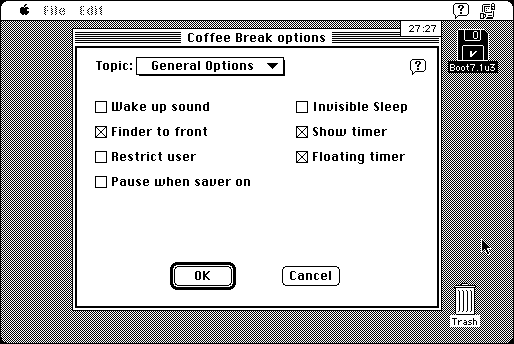

Download
CoffeeBreakLite1.0.zip (123K) Coffee Break Lite 1.0 repackaged into a zipped hfs disk image and checksum file. The disk image can be mounted with Mini vMac.
CoffeeBreakLite1.0.sit (115K) Coffee Break Lite 1.0 in the original format.
copyright: Thomas Reed
mod date: Aug 29, 2001
license: freeware
last known url
(gone)
Designed to prevent repetitive stress injuries by “making the user take periodic breaks”. It doesn't just remind you, it prevents you from using the computer. Requires System 7. After the break is over, it may give an error message when trying to play a sound and then quit. But there is an option to turn off this sound, and then the program seems to work.

If you find these downloads useful, please consider helping the Gryphel Project, which hosts them.
Here are the md5 checksums for the downloads, signed with Gryphel Key 5:
--------- GRY SIGNED TEXT --------- 01cfe5071f361ab95185b4ad5acb0275 CoffeeBreakLite1.0.zip 816efd016525371a0047660822d8fa08 CoffeeBreakLite1.0.sit ------- BEGIN GRY SIGNATURE ------- Gry/4Xa8CFcUzxdN/Fqw7QkmdR3NXRDvM6tOCgv7YhwaAfGc7bhd4S1vbWglOgpR M3haW9p1d8oVqYl+wV+wvuBXCC4zGd+uw01TPyCh/j0E0I0XtEoIPT/bDV3r8vb5 gJhUyg4qgVjC0g36tOOv0Ch5cxWoc0IdsFGnKTVMA52vBFks63uVGIBchrqO1GCO -------- END GRY SIGNATURE --------